Demostración de la clase Insular
Ejemplos sobre uso de clase insular
Contents
- Inicialización
- ARCHIPIÉLAGOS ESCALARES
- Ejemplo con Isla Guadalupe
- PROPIEDAD ISLOTE
- Graficado de punto medio de un archipiélago y punto medio de sus islotes
- Ejemplo con Islas Coronado
- Ejemplo con Islas Todos Santos
- Tamaño de los elementos
- Ejemplo con Islas Coronado
- Ejemplo con Islas Todos Santos
- Ejemplo con Isla Guadalupe
- ARCHIPIELAGOS VECTORIALES
- Ejemplo con todas las islas
- Ejemplo con Islas del Pacífico
- Ejemplo con Aves Marinas Endémicas
Inicialización
Limpia la memoria y actualiza toolbox que contiene clase insular
clear, close all, clc
ARCHIPIÉLAGOS ESCALARES
Ejemplo con Isla Guadalupe
Isla = insular('guadalupe');
Guadalupe: guadalupe_LCosta.shp
Graficamos su mapa de elevación y línea de costa
figure, hold on pcolor(Isla); plot(Isla,'color','w'); text(Isla,'nombre'); axis(Isla)
Download http://rmd.neoknet.com/srtm1/N28W119.hgt.zip ... done. Download http://rmd.neoknet.com/srtm1/N29W119.hgt.zip ... done.
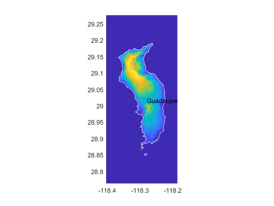
Usamos los métodos geoshow y mapshow
figure geoshow(Isla); figure mapshow(Isla);
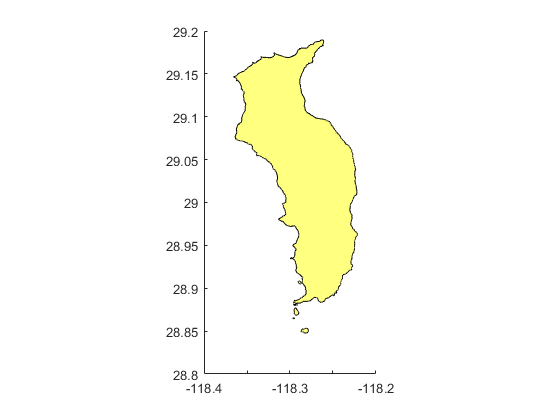
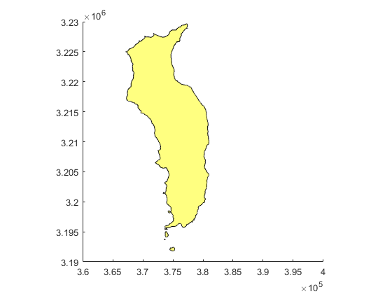
Tambien podemos usar la función de graficado dem (François Beauducel)
figure dem(Isla);
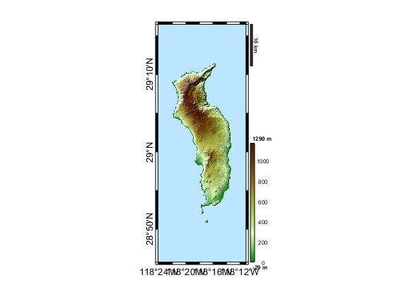
PROPIEDAD ISLOTE
Graficado de punto medio de un archipiélago y punto medio de sus islotes
Ejemplo con Islas Coronado
Isla = insular('coronado');
Coronado: coronado_LCosta.shp
Primero graficamos el archipiélago y su punto medio
figure, hold on plot(Isla); title(Isla.nombre) axis(Isla) plot(Isla.PuntoMedio,'*','markersize',10);
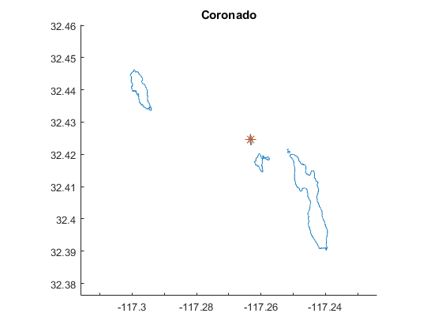
y luego graficamos el punto medio de cada islote
plot(Isla.Islote.PuntoMedio,'.','markersize',15);
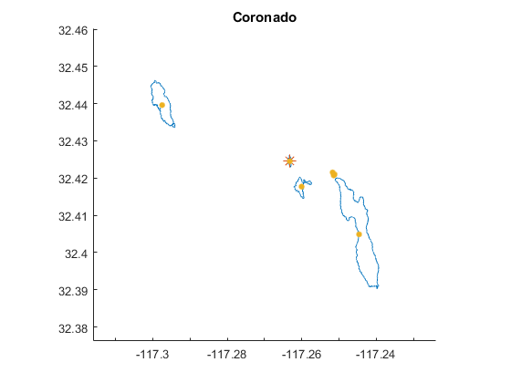
Ejemplo con Islas Todos Santos
Isla = insular('todossantos');
Todos Santos: todos_santos_LCosta_2014.shp
Primero graficamos el archipiélago y su punto medio
figure, hold on plot(Isla); title(Isla.nombre) axis(Isla) plot(Isla.PuntoMedio,'*','markersize',10);
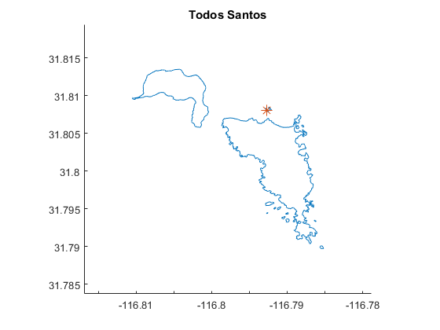
y luego graficamos el punto medio de cada islote
plot(Isla.Islote.PuntoMedio,'.','markersize',15);
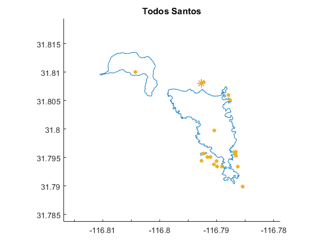
Tamaño de los elementos
Ejemplo con Islas Coronado
Isla = insular('coronado'); figure, hold on plot(Isla); text(Isla.Islote,'tamano') axis(Isla)
Coronado: coronado_LCosta.shp
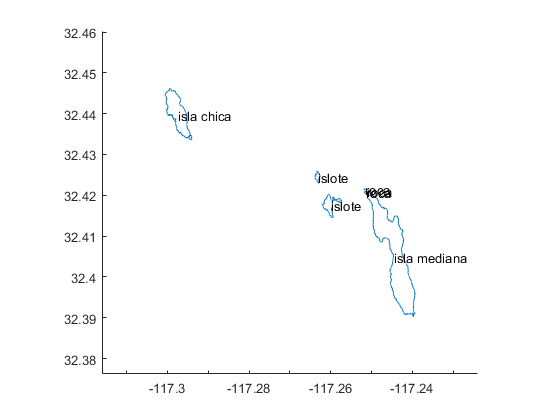
Ejemplo con Islas Todos Santos
Isla = insular('todossantos'); figure, hold on plot(Isla); text(Isla.Islote,'tamano') axis(Isla)
Todos Santos: todos_santos_LCosta_2014.shp
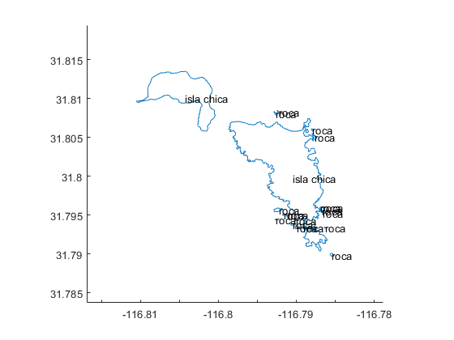
Ejemplo con Isla Guadalupe
Isla = insular('guadalupe'); figure, hold on plot(Isla); text(Isla.Islote,'tamano') axis(Isla)
Guadalupe: guadalupe_LCosta.shp
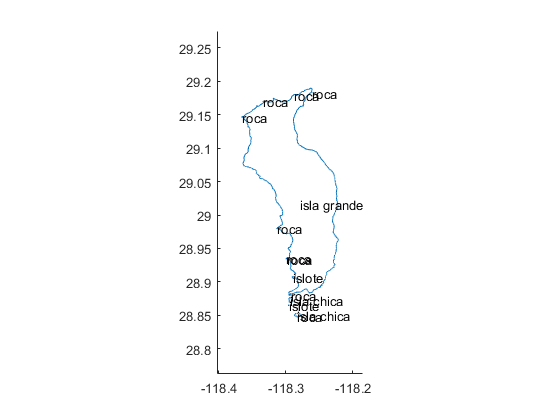
ARCHIPIELAGOS VECTORIALES
Ejemplo con todas las islas
Guardamos en la variable todas la lista de los IDs de las islas y luego cargamos todas las islas en la variable Isla
todas = listIslands; Isla = insular(todas)
Clarión: MEX_adm1.shp
Socorro: MEX_adm1.shp
Revillagigedo: MEX_adm1.shp
San Benedicto: MEX_adm1.shp
Larga: MEX_adm1.shp
Marietas: MEX_adm1.shp
Redonda: MEX_adm1.shp
María Cleofas: MEX_adm1.shp
María Madre: MEX_adm1.shp
San Juanico: MEX_adm1.shp
María Magdalena: MEX_adm1.shp
Marías: MEX_adm1.shp
Isabel: MEX_adm1.shp
Del Carmen: MEX_adm1.shp
Alijos: alijos_LCosta.shp
San Roque: san_roque_LCosta.shp
Asunción: asuncion_LCosta.shp
Natividad: natividad_LCosta.shp
Zapato: guadalupe_LCosta.shp
Morro Prieto: guadalupe_LCosta.shp
Guadalupe: guadalupe_LCosta.shp
San Benito Oeste: san_benito_LCosta.shp
San Benito: san_benito_LCosta.shp
San Benito Medio: san_benito_LCosta.shp
San Benito Este: san_benito_LCosta.shp
San Jerónimo: san_jeronimo_LCosta.shp
San Martín: MEX_adm1.shp
Cedros: MEX_adm1.shp
Adelaida: MEX_adm1.shp
Rasa: MEX_adm1.shp
Ángel de la Guarda: MEX_adm1.shp
Partida: partida_LCosta_UTM-12.shp
Todos Santos Sur: todos_santos_LCosta_2014.shp
Todos Santos Norte: todos_santos_LCosta_2014.shp
Todos Santos: todos_santos_LCosta_2014.shp
Coronado Medio: coronado_LCosta.shp
Coronado: coronado_LCosta.shp
Coronado Norte: coronado_LCosta.shp
Coronado Sur: coronado_LCosta.shp
Creciente: MEX_adm1.shp
Pájaros: MEX_adm1.shp
Magdalena: MEX_adm1.shp
Pauquino: MEX_adm1.shp
San Gil: MEX_adm1.shp
Complejo Insular Espíritu Santo: MEX_adm1.shp
María: MEX_adm1.shp
Santo Domingo: MEX_adm1.shp
Danzante: MEX_adm1.shp
Carmen: MEX_adm1.shp
Coronado: MEX_adm1.shp
Santa Catalina: MEX_adm1.shp
Loreto: MEX_adm1.shp
Monserrat: MEX_adm1.shp
Farallón de San Ignacio: farallon_de_san_ignacio_LCosta_UTM-12.shp
San Pedro Martir: san_pedro_martir_LCosta_UTM-12.shp
Tiburón: MEX_adm1.shp
Banco Chinchorro: MEX_adm1.shp
Arrecife Alacranes: MEX_adm1.shp
Cozumel: MEX_adm1.shp
Mujeres: MEX_adm1.shp
Isla =
Archipiélagos:
clarionrevillagigedo
socorrorevillagigedo
revillagigedo
sanbenedictorevillagigedo
larga
marietas
redonda
mariacleofasmarias
mariamadremarias
sanjuanicomarias
mariamagdalenamarias
marias
isabel
carmen
alijos
sanroque
asuncion
natividad
zapatogpe
morroprietogpe
guadalupe
sboeste
sanbenito
sbmedio
sbeste
sanjeronimo
sanmartin
cedros
adelaida
rasa
angeldelaguarda
partida
tssur
tsnorte
todossantos
coronadomedio
coronado
coronadonorte
coronadosur
crecientemagdalena
pajarosmagdalena
magdalenamagdalena
pauquinomagdalena
sangilmagdalena
espiritusanto
mariamagdalena
santodomingomagdalena
danzanteloreto
carmenloreto
coronadoloreto
santacatalinaloreto
loreto
monserratloreto
farallondesanignacio
sanpedromartir
tiburon
chinchorro
alacranes
cozumel
mujeres
1×60 insular array with properties:
id
nombre
abrev
Margen
DEM
Islote
proyeccion
unidades
area
ejes
Envolvente
geohash
latMax
latMin
lonMax
lonMin
nIslotes
perimetro
PuntoMedio
Recuadro
xMax
xMin
yMax
yMin
Graficamos la línea de costa de México con la función plotMexicoSinIslas y graficamos las islas con la fucnión plot (la cual ha sido sobrecargada para objetos clase insular)
figure, hold on plotMexicoSinIslas plot(Isla); text(Isla,'nombre'); axis(Isla)
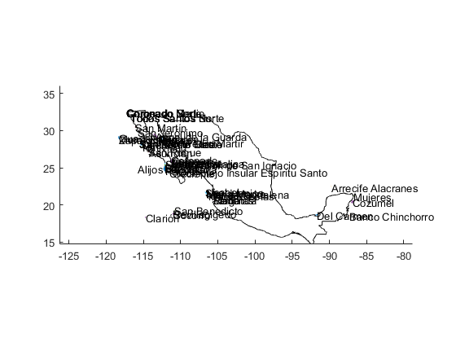
Ejemplo con Islas del Pacífico
ml = {'coronado','todossantos','sanmartin','sanjeronimo','natividad','sanroque','asuncion'};
ML = insular(ml);
San Roque: san_roque_LCosta.shp Asunción: asuncion_LCosta.shp Natividad: natividad_LCosta.shp San Jerónimo: san_jeronimo_LCosta.shp San Martín: MEX_adm1.shp Todos Santos: todos_santos_LCosta_2014.shp Coronado: coronado_LCosta.shp
figure, hold on plotMexicoSinIslas pcolor(ML); plot(ML,'color','w'); text(ML,'nombre'); axis(ML)
Download http://rmd.neoknet.com/srtm1/N27W115.hgt.zip ... done. Download http://rmd.neoknet.com/srtm1/N27W116.hgt.zip ... done. Download http://rmd.neoknet.com/srtm1/N29W116.hgt.zip ... done. Download http://rmd.neoknet.com/srtm1/N30W117.hgt.zip ... done. Download http://rmd.neoknet.com/srtm1/N31W117.hgt.zip ... done. Download http://rmd.neoknet.com/srtm1/N32W118.hgt.zip ... done.
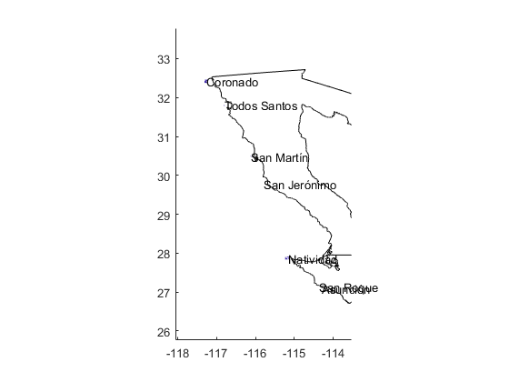
Hacemos un acercamiento a Islas Todos Santos
esTS = strcmpi('todossantos',{ML.id});
axis(ML(esTS))
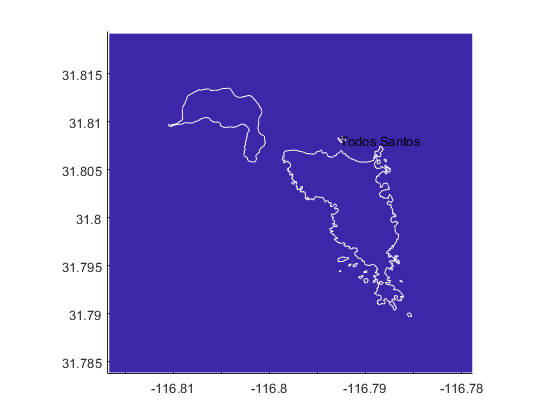
Ejemplo con Aves Marinas Endémicas
alianza = {'guadalupe','sanbenito','natividad','partida','sanpedromartir','farallondesanignacio','revillagigedo'};
A = insular(alianza);
Revillagigedo: MEX_adm1.shp Natividad: natividad_LCosta.shp Guadalupe: guadalupe_LCosta.shp San Benito: san_benito_LCosta.shp Partida: partida_LCosta_UTM-12.shp Farallón de San Ignacio: farallon_de_san_ignacio_LCosta_UTM-12.shp San Pedro Martir: san_pedro_martir_LCosta_UTM-12.shp
figure, hold on plotMexicoSinIslas pcolor(A); plot(A,'color','w'); text(A,'nombre'); axis(A)
Download http://rmd.neoknet.com/srtm1/N18W116.hgt.zip ... ** tile not found. Considering offshore. Download http://rmd.neoknet.com/srtm1/N19W116.hgt.zip ... ** tile not found. Considering offshore. Download http://rmd.neoknet.com/srtm1/N18W115.hgt.zip ... done. Download http://rmd.neoknet.com/srtm1/N19W115.hgt.zip ... ** tile not found. Considering offshore. Download http://rmd.neoknet.com/srtm1/N18W114.hgt.zip ... ** tile not found. Considering offshore. Download http://rmd.neoknet.com/srtm1/N19W114.hgt.zip ... ** tile not found. Considering offshore. Download http://rmd.neoknet.com/srtm1/N18W113.hgt.zip ... ** tile not found. Considering offshore. Download http://rmd.neoknet.com/srtm1/N19W113.hgt.zip ... ** tile not found. Considering offshore. Download http://rmd.neoknet.com/srtm1/N18W112.hgt.zip ... done. Download http://rmd.neoknet.com/srtm1/N19W112.hgt.zip ... ** tile not found. Considering offshore. Download http://rmd.neoknet.com/srtm1/N18W111.hgt.zip ... done. Download http://rmd.neoknet.com/srtm1/N19W111.hgt.zip ... done. Download http://rmd.neoknet.com/srtm1/N18W110.hgt.zip ... ** tile not found. Considering offshore. Download http://rmd.neoknet.com/srtm1/N19W110.hgt.zip ... ** tile not found. Considering offshore. Download http://rmd.neoknet.com/srtm1/N28W116.hgt.zip ... done. Download http://rmd.neoknet.com/srtm1/N28W114.hgt.zip ... done. Download http://rmd.neoknet.com/srtm1/N25W110.hgt.zip ... done. Download http://rmd.neoknet.com/srtm1/N28W113.hgt.zip ... done.
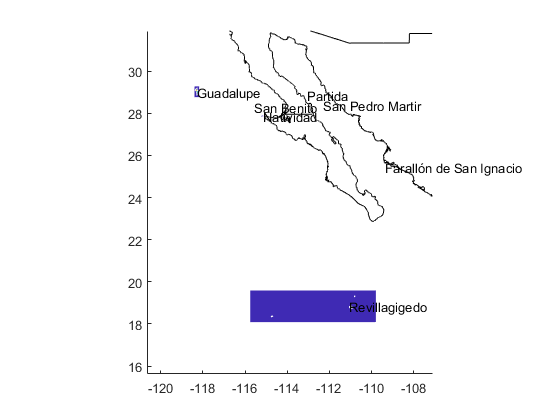